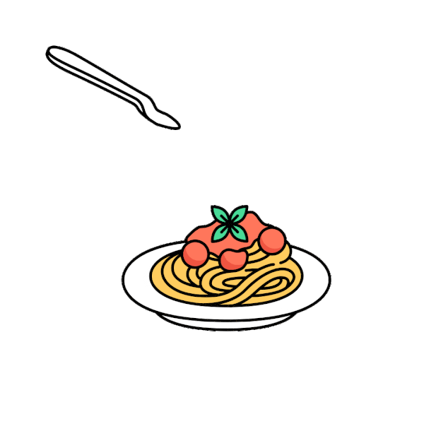
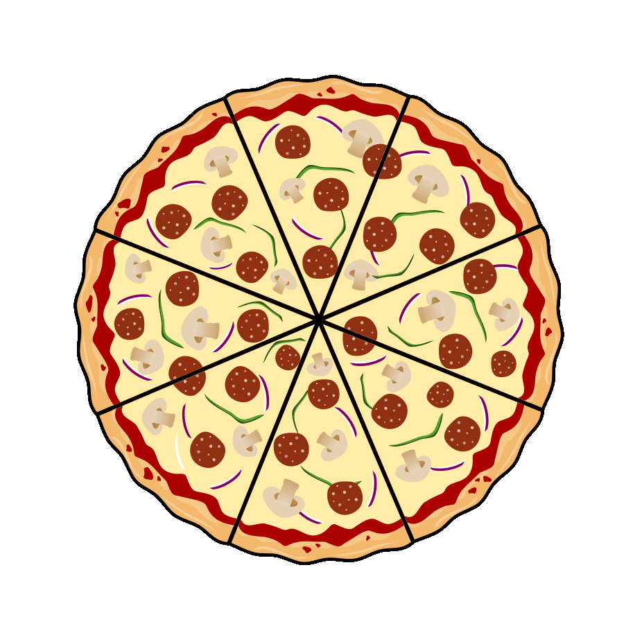

Plaatsen
Omdat Italië zo groot is, is het te groot om in één keer te behandelen. Ik heb hier een aantal plaatsen voor jullie uitgelegd die je sowieso een keer zou moeten bezoeken. Naast de bekende plaatsen zoals Rome en Venetië zijn dit de plaatsen waar ik als eerste heen zou gaan als ik het zelf opnieuw zou doen. Maar ik heb nog heel veel plaatsen op mijn lijstje die ik ook wel zou willen bezoeken.
Vergelijking van de steden
Hier vergelijk ik de steden op basis van een aantal cijfers, zoals inwoners, toeristen, oppervlakte, grootte van de binnenstad en het aantal dagen dat ik er was.

Milaan
Milaan is modern en stijlvol en was voor mij een fijne eerste stad om Italië te ontdekken. Meer lezen »

Genua
Dit is de eerste stad die ik helemaal in mijn eentje heb bezocht. Sindsdien heeft deze stad een speciale plek in mijn hart. De bijzondere geschiedenis van Genua, een stad die is opgegroeid tussen de bergen, die uitgroeide tot een machtige handelsstad en zich door de eeuwen heen steeds verder heeft ontwikkeld, heeft mij echt geraakt. De combinatie van smalle straatjes, indrukwekkende gebouwen en de ligging tussen zee en bergen heeft mijn hart veroverd. Klik hier om meer te lezen »

Napels
Napels is een prachtige stad met veel energie, geschiedenis en natuurlijk geweldig eten. Meer lezen »
Italië staat bekend om zijn pizza en pasta. Natuurlijk heb ik in de weken dat ik in Italië was bijna elke avond pizza of pasta gegeten. Ik heb een aantal foto's voor jullie bewaard. Als je op de knop hieronder drukt, zie je telkens een ander gerecht.

